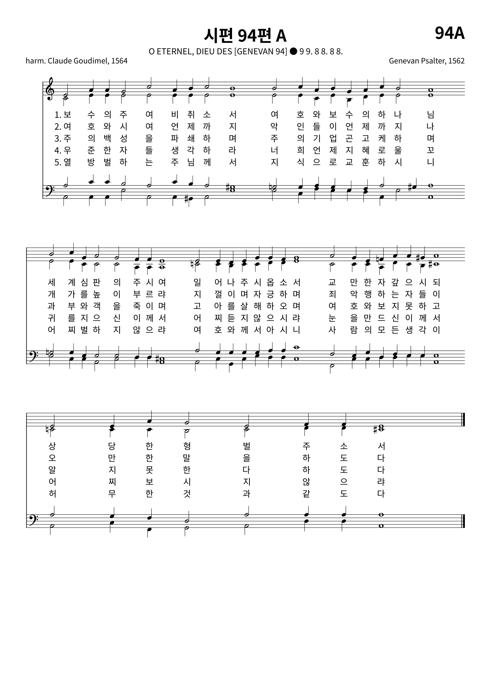

Psalm 94A
O ETERNEL, DIEU DES [GENEVAN 94] · 9 9. 8 8. 8 8.
English title: O LORD of Vengeance, Show Thy Glory
Tune: Genevan Psalter, 1562 · Harmony: Claude Goudimel, 1564 · Lyrics: Korean adaptation of Psalm 94 from the Korean Revised Version (AI draft adaptation · not yet theologically reviewed) · 5 stanzas
Psalm 94 is divided into 2 tunes: A B · This tune contains stanzas 1–5 of the Psalm 94 lyrics.
Score PDF MusicXML (for printing) MusicXML (for accompaniment, with prelude and repeats) Read Psalm 94 (Korean Revised Version)
Score
← Psalm 93 ListAccompaniment (in preparation)Psalm 94B →
Lyrics (Korean)
Stanza 1
보수의 주여 비취소서
여호와 보수의 하나님
세계 심판의 주시여
일어나 주시옵소서
교만한 자 갚으시되
상당한 형벌 주소서
보수의 주여 비취소서
여호와 보수의 하나님
세계 심판의 주시여
일어나 주시옵소서
교만한 자 갚으시되
상당한 형벌 주소서
Stanza 2
여호와시여 언제까지
악인들이 언제까지나
개가를 높이 부르랴
지껄이며 자긍하며
죄악 행하는 자들이
오만한 말을 하도다
여호와시여 언제까지
악인들이 언제까지나
개가를 높이 부르랴
지껄이며 자긍하며
죄악 행하는 자들이
오만한 말을 하도다
Stanza 3
주의 백성을 파쇄하며
주의 기업 곤고케 하며
과부와 객을 죽이며
고아를 살해하오며
여호와 보지 못하고
알지 못한다 하도다
주의 백성을 파쇄하며
주의 기업 곤고케 하며
과부와 객을 죽이며
고아를 살해하오며
여호와 보지 못하고
알지 못한다 하도다
Stanza 4
우준한 자들 생각하라
너희 언제 지혜로울꼬
귀를 지으신 이께서
어찌 듣지 않으시랴
눈을 만드신 이께서
어찌 보시지 않으랴
우준한 자들 생각하라
너희 언제 지혜로울꼬
귀를 지으신 이께서
어찌 듣지 않으시랴
눈을 만드신 이께서
어찌 보시지 않으랴
Stanza 5
열방 벌하는 주님께서
지식으로 교훈하시니
어찌 벌하지 않으랴
여호와께서 아시니
사람의 모든 생각이
허무한 것과 같도다
열방 벌하는 주님께서
지식으로 교훈하시니
어찌 벌하지 않으랴
여호와께서 아시니
사람의 모든 생각이
허무한 것과 같도다